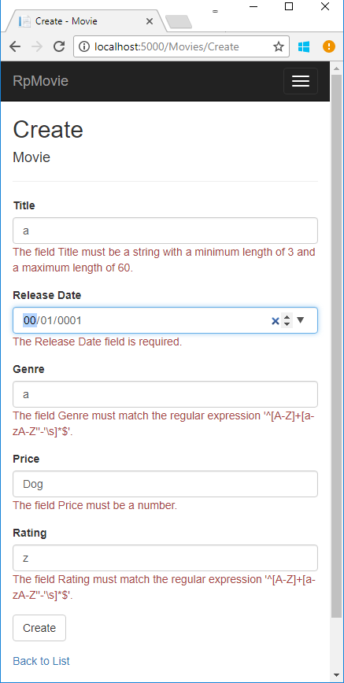

Adding validation to a Razor Page
In this section validation logic is added to the Movie model. The validation rules are enforced any time a user creates or edits a movie.
Validation
A key tenet of software development is called DRY ("Don't Repeat Yourself"). Razor Pages encourages development where functionality is specified once, and it's reflected throughout the app. DRY can help reduce the amount of code in an app. DRY makes the code less error prone, and easier to test and maintain.
The validation support provided by Razor Pages and Entity Framework is a good example of the DRY principle. Validation rules are declaratively specified in one place (in the model class), and the rules are enforced everywhere in the app.
Adding validation rules to the movie model
Open the Movie.cs file. DataAnnotations provides a built-in set of validation attributes that are applied declaratively to a class or property. DataAnnotations also contains formatting attributes like DataType that help with formatting and don't provide validation.
Update the Movie class to take advantage of the Required, StringLength, RegularExpression, and Range validation attributes.
public class Movie
{
public int ID { get; set; }
[StringLength(60, MinimumLength = 3)]
[Required]
public string Title { get; set; }
[Display(Name = "Release Date")]
[DataType(DataType.Date)]
public DateTime ReleaseDate { get; set; }
[Range(1, 100)]
[DataType(DataType.Currency)]
public decimal Price { get; set; }
[RegularExpression(@"^[A-Z]+[a-zA-Z''-'\s]*$")]
[Required]
[StringLength(30)]
public string Genre { get; set; }
[RegularExpression(@"^[A-Z]+[a-zA-Z''-'\s]*$")]
[StringLength(5)]
[Required]
public string Rating { get; set; }
}
Validation attributes specify behavior that is enforced on model properties. The Required and MinimumLength attributes indicates that a property must have a value; but nothing prevents a user from entering white space to satisfy the validation constraint. The RegularExpression attribute is used to limit what characters can be input. In the preceding code, Genre and Rating must use only letters (white space, numbers and special characters are not allowed). The Range attribute constrains a value to within a specified range. The StringLength attribute sets the maximum length of a string, and optionally the minimum length. Value types (such as decimal, int, float, DateTime) are inherently required and don't need the [Required] attribute.
Having validation rules automatically enforced by ASP.NET Core helps make an app more robust. Automatic validation on models helps protect the app because you don't have to remember to apply them when new code is added.
Validation Error UI in Razor Pages
Run the app and navigate to Pages/Movies.
Select the Create New link. Complete the form with some invalid values. When jQuery client-side validation detects the error, it displays an error message.

Note
You may not be able to enter decimal points or commas in the Price field. To support jQuery validation in non-English locales that use a comma (",") for a decimal point, and non US-English date formats, you must take steps to globalize your app. See Additional resources for more information. For now, just enter whole numbers like 10.
Notice how the form has automatically rendered a validation error message in each field containing an invalid value. The errors are enforced both client-side (using JavaScript and jQuery) and server-side (when a user has JavaScript disabled).
A significant benefit is that no code changes were necessary in the Create or Edit pages. Once DataAnnotations were applied to the model, the validation UI was enabled. The Razor Pages created in this tutorial automatically picked up the validation rules (using validation attributes on the properties of the Movie model class). Test validation using the Edit page, the same validation is applied.
The form data is not posted to the server until there are no client-side validation errors. Verify form data is not posted by one or more of the following approaches:
- Put a break point in the
OnPostAsyncmethod. Submit the form (select Create or Save). The break point is never hit. - Use the Fiddler tool.
- Use the browser developer tools to monitor network traffic.
Server-side validation
When JavaScript is disabled in the browser, submitting the form with errors will post to the server.
Optional, test server-side validation:
- Disable JavaScript in the browser. If you can't disable JavaScript in the browser, try another browser.
- Set a break point in the
OnPostAsyncmethod of the Create or Edit page. - Submit a form with validation errors.
Verify the model state is invalid:
if (!ModelState.IsValid) { return Page(); }
The following code shows a portion of the Create.cshtml page that you scaffolded earlier in the tutorial. It's used by the Create and Edit pages to display the initial form and to redisplay the form in the event of an error.
<form method="post">
<div asp-validation-summary="ModelOnly" class="text-danger"></div>
<div class="form-group">
<label asp-for="Movie.Title" class="control-label"></label>
<input asp-for="Movie.Title" class="form-control" />
<span asp-validation-for="Movie.Title" class="text-danger"></span>
</div>
The Input Tag Helper uses the DataAnnotations attributes and produces HTML attributes needed for jQuery Validation on the client-side. The Validation Tag Helper displays validation errors. See Validation for more information.
The Create and Edit pages have no validation rules in them. The validation rules and the error strings are specified only in the Movie class. These validation rules are automatically applied to Razor Pages that edit the Movie model.
When validation logic needs to change, it's done only in the model. Validation is applied consistently throughout the application (validation logic is defined in one place). Validation in one place helps keep the code clean, and makes it easier to maintain and update.
Using DataType Attributes
Examine the Movie class. The System.ComponentModel.DataAnnotations namespace provides formatting attributes in addition to the built-in set of validation attributes. The DataType attribute is applied to the ReleaseDate and Price properties.
[Display(Name = "Release Date")]
[DataType(DataType.Date)]
public DateTime ReleaseDate { get; set; }
[Range(1, 100)]
[DataType(DataType.Currency)]
public decimal Price { get; set; }
The DataType attributes only provide hints for the view engine to format the data (and supplies attributes such as <a> for URL's and <a href="mailto:EmailAddress.com"> for email). Use the RegularExpression attribute to validate the format of the data. The DataType attribute is used to specify a data type that is more specific than the database intrinsic type. DataType attributes are not validation attributes. In the sample application, only the date is displayed, without time.
The DataType Enumeration provides for many data types, such as Date, Time, PhoneNumber, Currency, EmailAddress, and more. The DataType attribute can also enable the application to automatically provide type-specific features. For example, a mailto: link can be created for DataType.EmailAddress. A date selector can be provided for DataType.Date in browsers that support HTML5. The DataType attributes emits HTML 5 data- (pronounced data dash) attributes that HTML 5 browsers consume. The DataType attributes do not provide any validation.
DataType.Date does not specify the format of the date that is displayed. By default, the data field is displayed according to the default formats based on the server's CultureInfo.
The DisplayFormat attribute is used to explicitly specify the date format:
[DisplayFormat(DataFormatString = "{0:yyyy-MM-dd}", ApplyFormatInEditMode = true)]
public DateTime ReleaseDate { get; set; }
The ApplyFormatInEditMode setting specifies that the formatting should be applied when the value is displayed for editing. You might not want that behavior for some fields. For example, in currency values, you probably do not want the currency symbol in the edit UI.
The DisplayFormat attribute can be used by itself, but it's generally a good idea to use the DataType attribute. The DataType attribute conveys the semantics of the data as opposed to how to render it on a screen, and provides the following benefits that you don't get with DisplayFormat:
- The browser can enable HTML5 features (for example to show a calendar control, the locale-appropriate currency symbol, email links, etc.)
- By default, the browser will render data using the correct format based on your locale.
- The
DataTypeattribute can enable the ASP.NET Core framework to choose the right field template to render the data. TheDisplayFormatif used by itself uses the string template.
Note: jQuery validation does not work with the Range attribute and DateTime. For example, the following code will always display a client-side validation error, even when the date is in the specified range:
[Range(typeof(DateTime), "1/1/1966", "1/1/2020")]
It's generally not a good practice to compile hard dates in your models, so using the Range attribute and DateTime is discouraged.
The following code shows combining attributes on one line:
public class Movie
{
public int ID { get; set; }
[StringLength(60, MinimumLength = 3)]
public string Title { get; set; }
[Display(Name = "Release Date"), DataType(DataType.Date)]
public DateTime ReleaseDate { get; set; }
[RegularExpression(@"^[A-Z]+[a-zA-Z''-'\s]*$"), Required, StringLength(30)]
public string Genre { get; set; }
[Range(1, 100), DataType(DataType.Currency)]
public decimal Price { get; set; }
[RegularExpression(@"^[A-Z]+[a-zA-Z''-'\s]*$"), StringLength(5)]
public string Rating { get; set; }
}